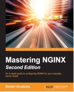
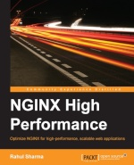
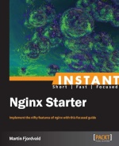

nginx books
| title: The Complete NGINX Cookbook - 2019 Edition author: Derek DeJonghe publisher: O'Reilly language: English year: 2018 |
| title: Deploying NGINX Plus as an API Gateway author: Liam Crilly publisher: NGINX language: English year: 2018 |
| title: Nginx HTTP Server - Fourth Edition author: Martin Fjordvald, Clément Nedelcu publisher: Packt Publishing language: English year: 2018 |
| title: Nginx Cookbook author: Tim Butler publisher: Packt Publishing language: English year: 2017 |
| title: Nginx Troubleshooting author: Alex Kapranoff publisher: Packt Publishing language: English year: 2016 |
| title: Nginx richtig konfigurieren author: Oliver Gutperl publisher: Digital Sailors language: Deutsch (German) year: 2016 |
| title: nginx実践入門 (Practical nginx guide) authors: 久保達彦（くぼたつひこ） (Tatsuhiko Kubo), 道井俊介（みちいしゅんすけ） (MICHII Shunsuke) publisher: 技術評論社 (Gijutsuhyoronsha) language: 日本語 (Japanese) year: 2016 |
|  | title: Mastering NGINX - Second Edition author: Dimitri Aivaliotis publisher: Packt Publishing language: English year: 2016 |
| title: Nginx HTTP Server - Third Edition author: Clément Nedelcu publisher: Packt Publishing language: English year: 2015 |
| title: Nginx ポケットリファレンス (Nginx pocket reference) authors: 鶴長 鎮一 (Shinichi Tsurunaga), 馬場 俊彰 (Baba Toshiaki) publisher: 技術評論社 (Gijutsuhyoronsha) language: 日本語 (Japanese) year: 2015 |
 | title: Nginx Essentials author: Valery Kholodkov publisher: Packt Publishing language: English year: 2015 |
|  | title: Nginx High Performance author: Rahul Sharma publisher: Packt Publishing language: English year: 2015 |
| title: Nginx Module Extension author: Usama Dar publisher: Packt Publishing language: English year: 2013 |
|  | title: Instant Nginx Starter author: Martin Fjordvald publisher: Packt Publishing language: English year: 2013 |
| title: Nginx HTTP Server - Second Edition author: Clément Nedelcu publisher: Packt Publishing language: English year: 2013 |
| title: ハイパフォーマンスHTTPサーバ Nginx入門 (Nginx HTTP Server) author: Clément Nedelcu translator: 長尾高弘 publisher: アスキー・メディアワークス language: 日本語 (Japanese) year: 2011 |
| title: Nginx 1 Web Server Implementation Cookbook author: Dipankar Sarkar publisher: Packt Publishing language: English year: 2011 |
| title: Nginx HTTP Server author: Clément Nedelcu publisher: Packt Publishing language: English year: 2010 |
| title: 实战Nginx：取代Apache的高性能Web服务器 (nginx in Practice: A High Performance Web Server to Replace Apache) author: 张宴 (Zhang Yan) publisher: 电子工业出版社 (Publishing House of Electronics Industry) language: 中文 (Chinese) year: 2010 |